Customer Retention Analytics
Customer Churn & Retention
Synthetic subscription analytics · 31 August 2026 · USD
Local dashboard preview. These are validated static analysis outputs; this file is not a live Amazon QuickSight dashboard. The AWS build guide specifies filters and interactions.
Executive Overview
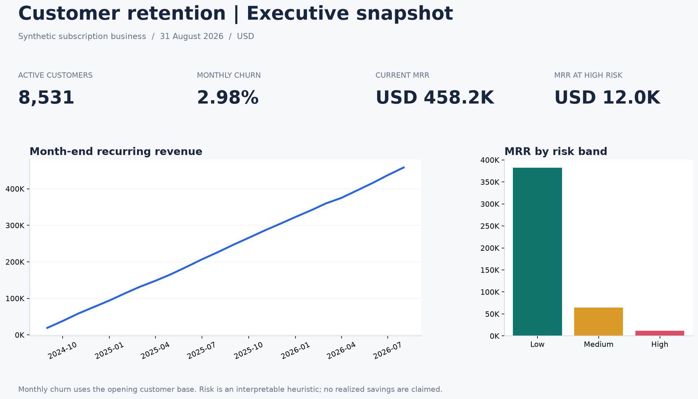
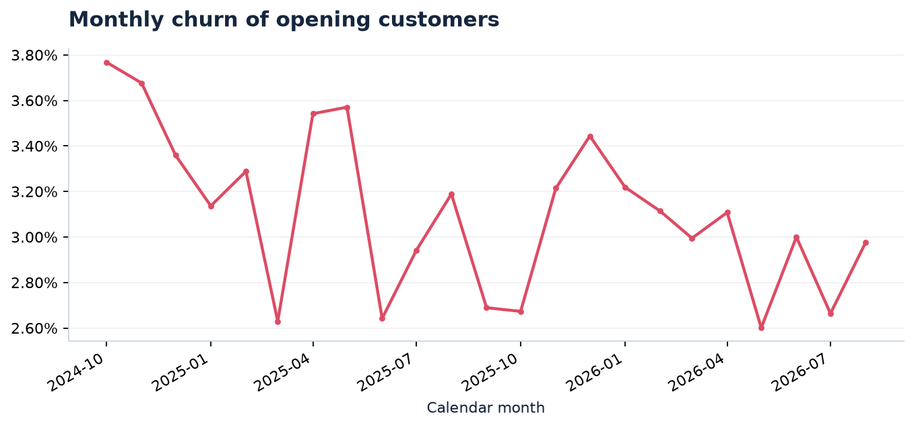
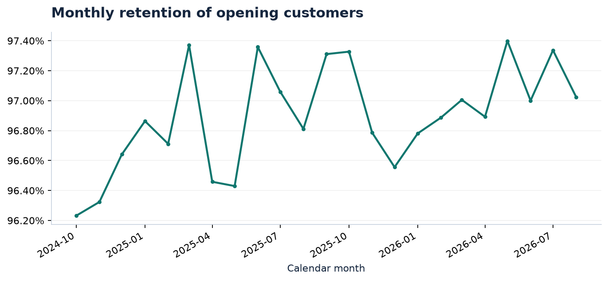
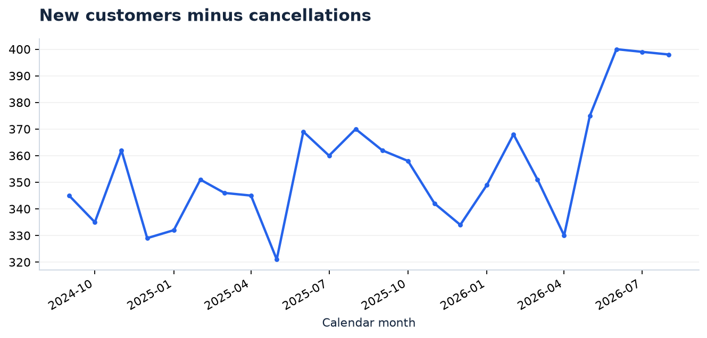
Churn Drivers
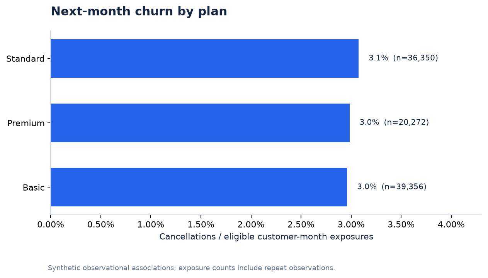
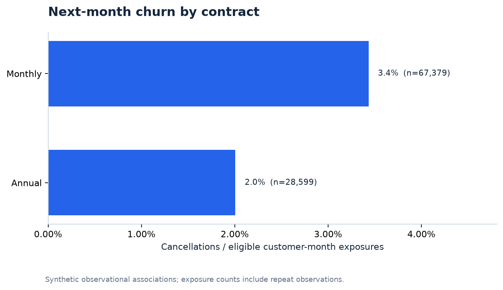
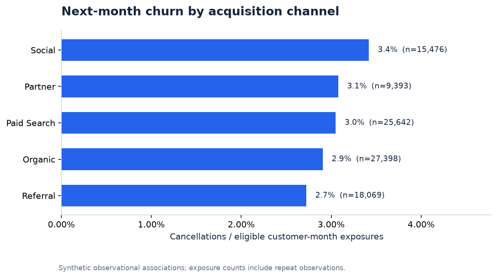
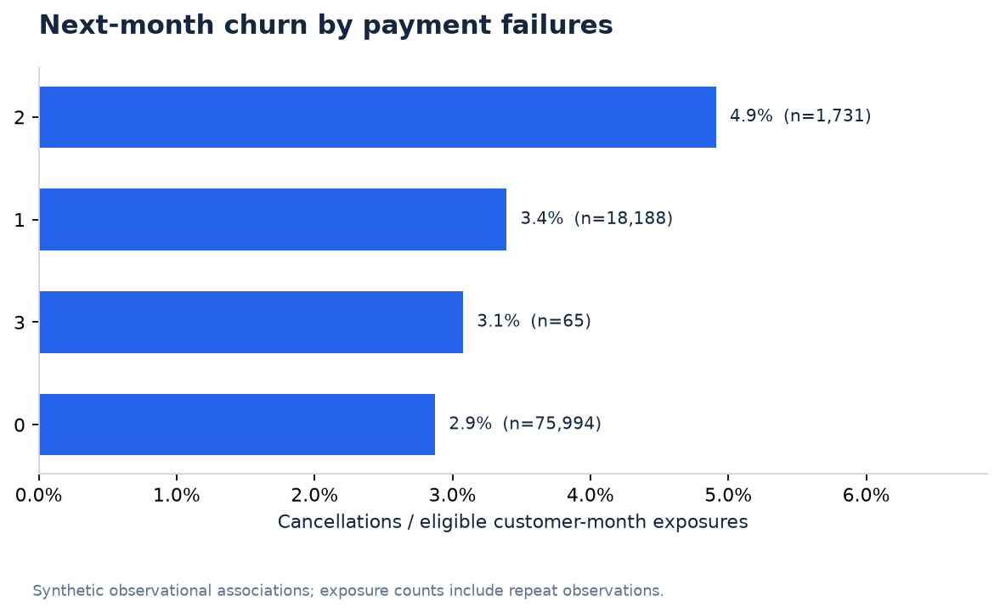
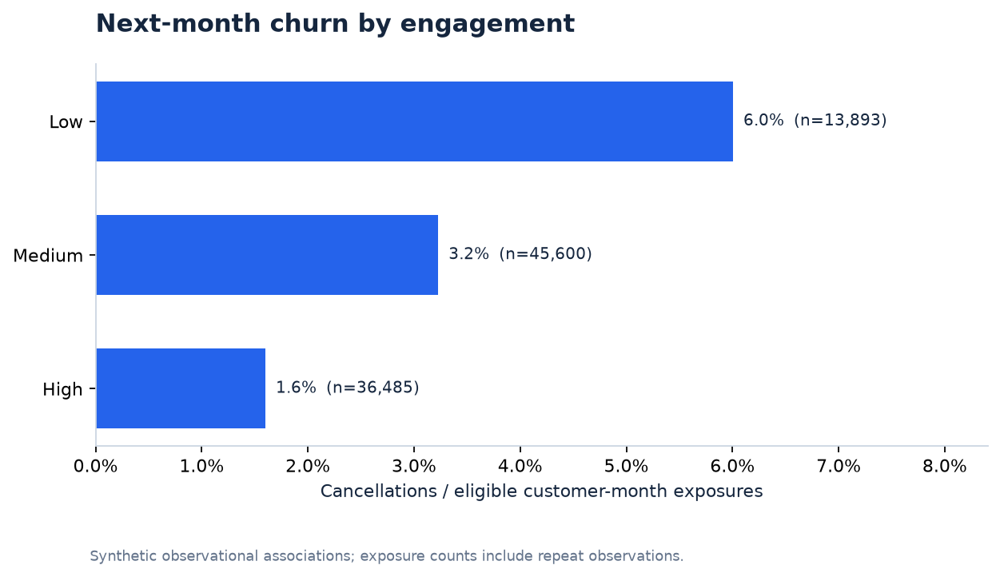
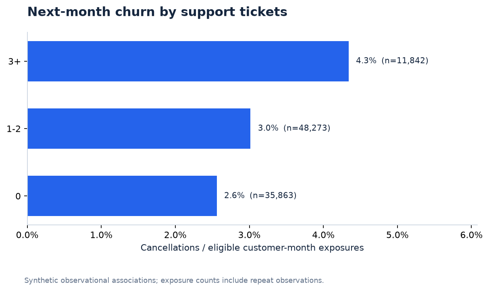
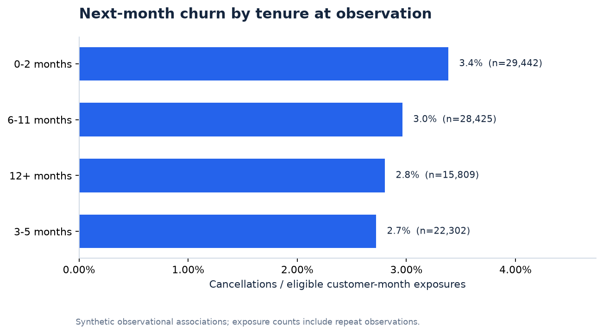
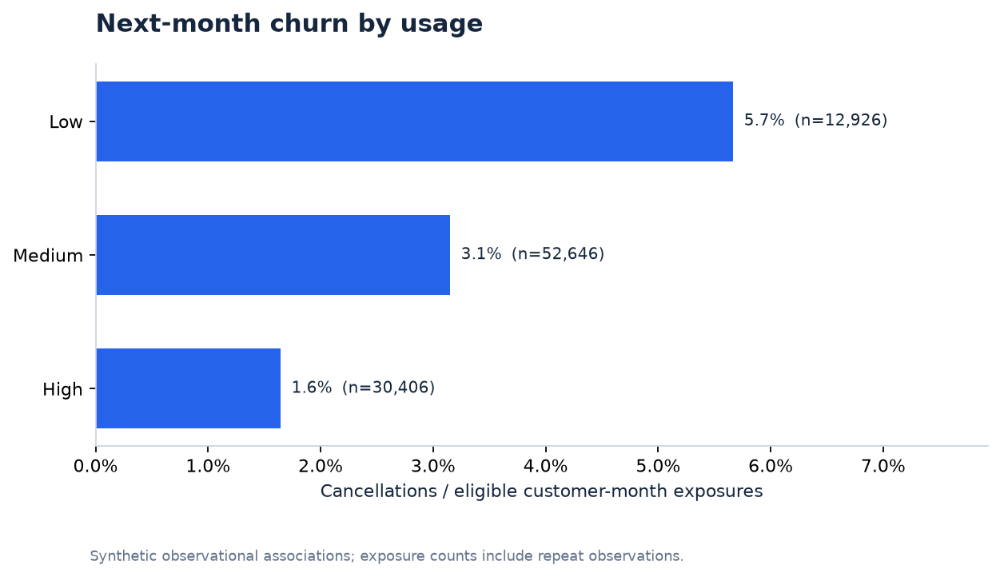
Segments & Risk
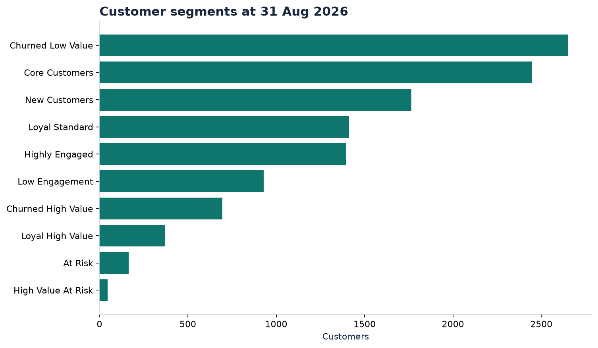
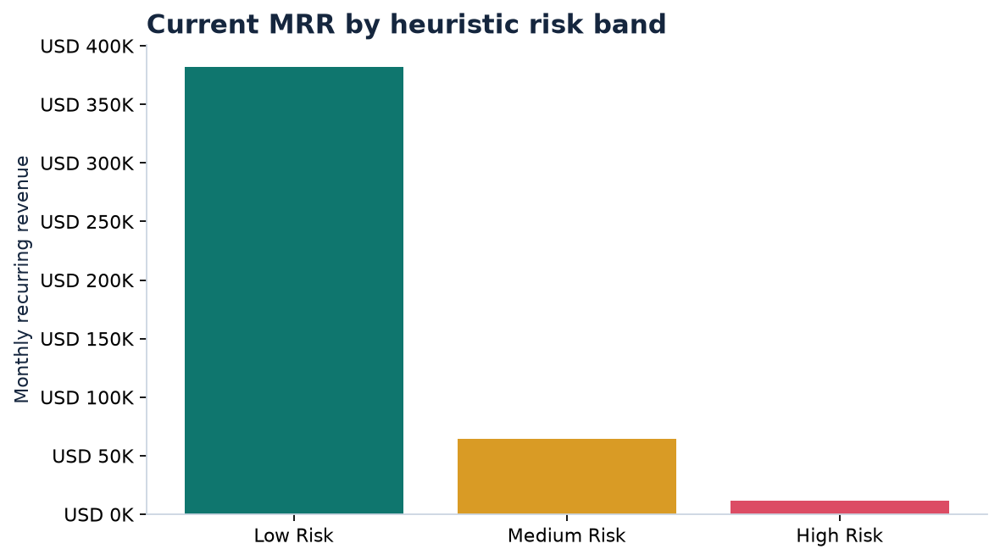
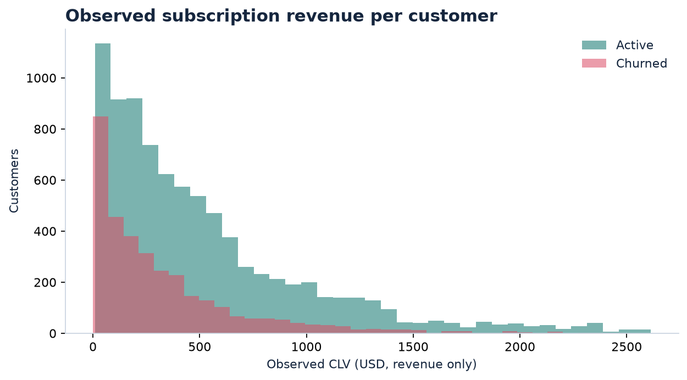
Revenue Opportunity
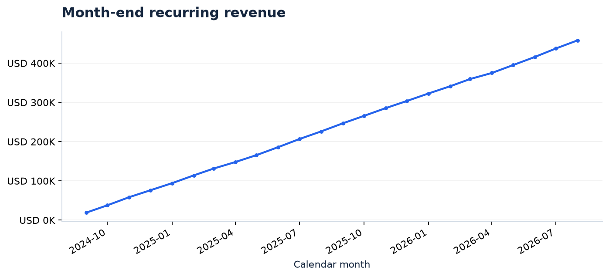
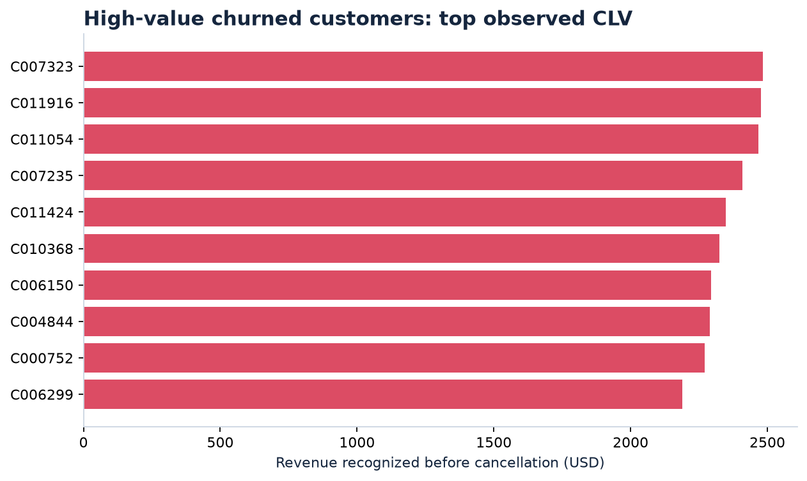
Definitions and denominator checks are documented in the repository. Risk scores are heuristics, observed CLV is historical revenue, and no causal or realized impact is claimed.